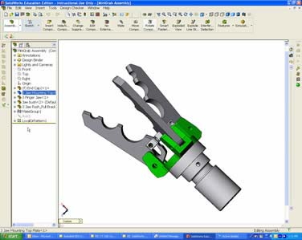
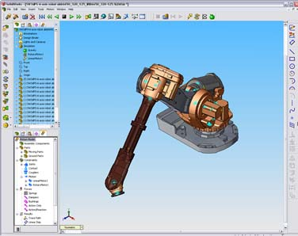

 
Dinamik ve Kinematik Analiz
Plastik enjeksiyon analiz ve simülasyon programları ile plastik parça imalatında oluşabilecek hataları tespit etmek ve bu hataları gidermek için önlemler almak mümkündür.
Parça tasarımı sırasında analiz programlarının kullanımı imalat aşamasına geçildiğinde çıkabilecek sorunların ortadan kalkmasını sağlar. Tespit edilebilecek bu hataların büyük bir çoğunluğu hacimsel kökenlidir ve parça tasarımında küçük değişiklikler yapılarak giderilebilir.
Parça tasarımı kadar tasarlanan parçanın hangi malzemeden imal edileceğine karar vermek, mevcut geometri için en uygun malzemenin hangisi olduğunu belirlemek de imalat kalitesi için en önemli parametrelerden bir tanesidir.
Günümüzde kullanılan mühendislik ve analiz programları bize malzeme karşılaştırmaları için çeşitli araçlar sunmaktadır. Yukarıdaki şekilde Moldflow programı içerisindeki malzeme karşılaştırma aracı görülmektedir. İçerisindeki malzeme bilgilerinin hepsi deneysel çalışmalar sonucunda program kütüphanesindeki veri tabanına girilmekte ve sizin seçmiş olduğunuz malzemelerden hangisinin parçanız için en uygun malzeme olduğunu size bir rapor olarak sunmaktadır.
Tasarlanan parçanın malzeme, baskı şartları gibi imalat bilgileri de analiz ortamına dahil edildiğinde parçanın imalatı simüle edilebilir ve oluşacak hatalar daha ilk baskı yapılmadan görülebilir ve önlem alınabilir.
Analiz programları sayesinde imalat sırasında oluşması muhtemel hatalar önceden belirlenebilirler. Plastik enjeksiyon işlemi sırasında plastik parçada oluşabilecek problemlerin genel sebepleri parçanın hacim dağılımı, buna bağlık olarak da akışkan plastik malzemenin bu hacim içerisindeki hareketinin karakteri ile ilgilidir. Kalıp içerisindeki boşlukta ergiyiğin akışının simüle edilmesi birçok hata hakkında fikir verebilir. Oluşacak çarpılmalar ve fiber katkılı malzeme-lerdeki mukavemet dengesizlikleri konusunda da malzeme hareketini önceden görebilmek bizim için çok önemlidir.
Parça içerisindeki akış hareketini görmek bize kalıp boşluğuna plastik girişini doğru nokta ya da noktalardan verip vermediğimizi anlamak için fırsat verecektir. Tabi ki sadece malzemenin kalıp içerisindeki yönlenmelerini görmek bizim için yeterli değildir.
Plastik parçanın baskı sonundaki tahmini kalitesini görmek de kalıplama işlemini doğru şartlarda yapıp yapmadığımızı anlamamız için önemli bir parametredir. Bu tip bir aracı iki yönlü kullanabiliriz. Parça kalitesine bakarak proses şartlarımızı tekrar gözden geçirip en iyiyi yakalamaya çalışabiliriz veya parça kalite farklılığını bölgesel olarak takip edebildiğimiz için problemli bölgeler az ya da önemsiz ise yok sayıp mevcut durumu kabul edebilir ve imalata geçebiliriz.
|